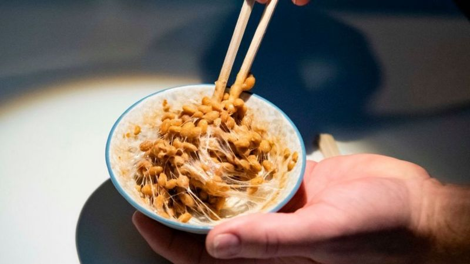
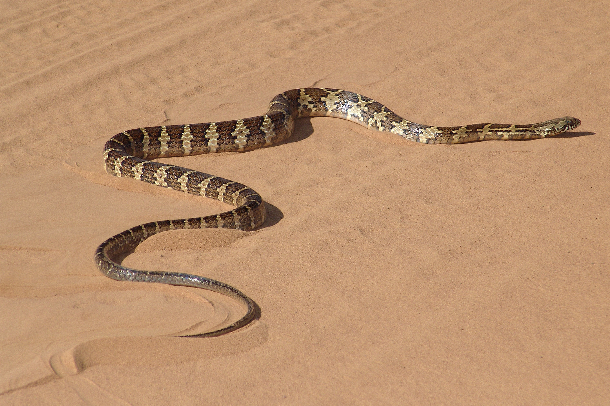
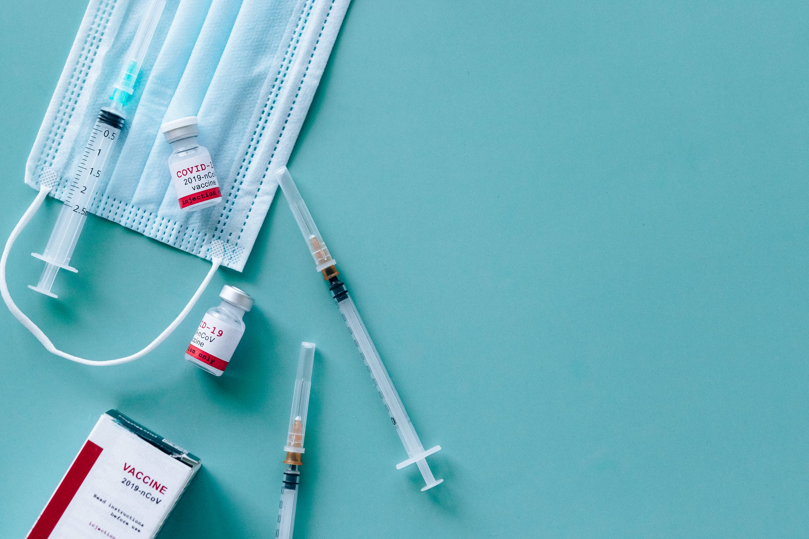
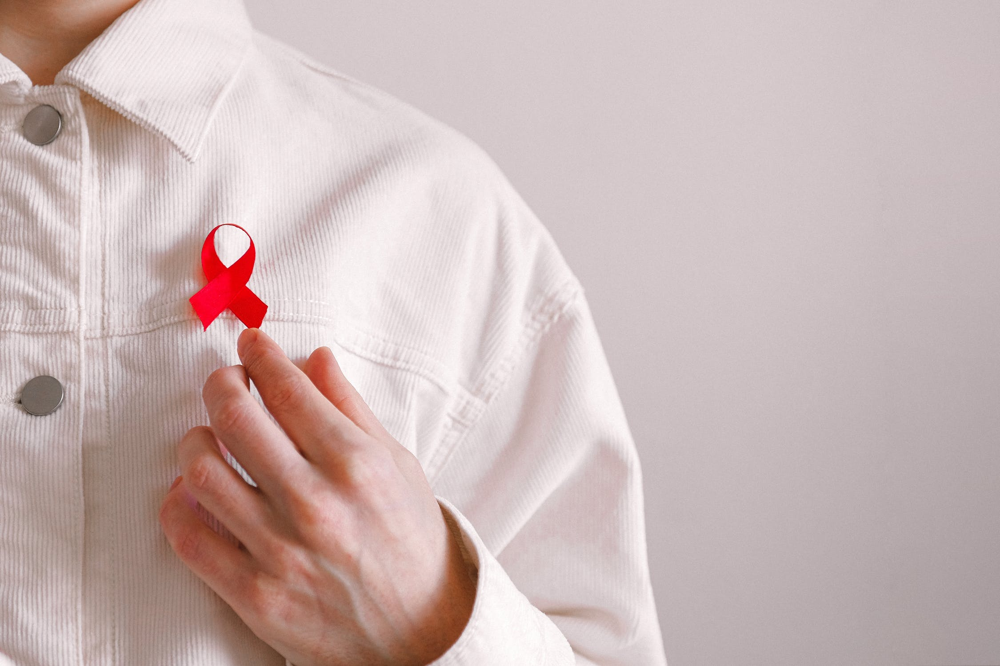

Apesar do momento difícil que estamos passando, resolvemos trazer algumas notícias positivas!
Um alimento japonês diminui a capacidade infecciosa do Sars-Cov-2. O Natô é um prato típico do café da manhã da maioria dos japoneses, pode ser um aliado no combate ao Covid-19. O prato é extraido a partir da soja fermentada. Mesmo não parecendo muito saboroso, é consumido por seus nutrientes. Uma pesquisa revelou que a bactéria presente na soja fermentada é capaz de diminuir capacidade infecciosa do coronavírus. Os cientistas infectaram células de boi e de humano cultivadas em laboratório com o vírus, após isso aplicaram as bactérias que reagiram combatendo o vírus. Ainda são necessários mais estudos aprofundados, porém já é um grande avanço.
No dia 17/08, o Ministério da saúde informou que 31,9% da população acima de 18 anos estava com a vacinação completa. Confira a notícia completa clicando aqui.
Pesquisadores da UNESP publicaram um artigo com o resultado de um estudo feito em laboratório. Os cientista injetaram um componente presente no veneno da jararacuçu em células de macaco, e uma hora depois adicionaram o vírus. Os cientistas observaram que a molécula impediu o vírus de se reproduzir. A molécula utilizada para a pesquisa não é tóxica para o ser humano, ela apenas interage com a enzima do vírus bloqueando sua reprodução.
Uma pesquisa publicada na revista Lancet demonstrou que a coronaVac atinge até 100% de proteção contra variante delta. A vacina produzida pelo instituto Butantan em parceria com o laboratório chinês Sinovac, quando aplicada as duas doses, tem um nível alto de proteção contra uma das cepas mais agressivas. A informação foi confirmada por Dimas Covas, diretor do Butantan.
Os pesquisadores compararam os dados de 37.377 pessoas que receberam vacina contra a gripe, com os de outros 37.377 infectados com SARS-CoV-2 que não foram vacinados contra a gripe. Aqueles que receberam a vacina contra a gripe tiveram redução significativa de sintomas como acidente vascular cerebral, trombose venosa profunda e infecções generalizadas, além de menor probabilidade de internação em UTI. Os resultados do estudo foram apresentados em uma reunião online da Sociedade Europeia de Microbiologia Clínica e Doenças Infecciosas. Segundo a pesquisa, pacientes com covid-19 que não foram vacinados contra a gripe apresentaram risco até 58% maior de terem um derrame e até 45% maior de sofrer infecções graves. Eles também eram mais propensos a serem internados em uma UTI. Deixando claro que a vacina da gripe não substitui a da Covid! Portanto, todos devem tomar a vacina contra o coronavírus!
Os pesquisadores estão utilizando uma tecnologia parecida com a da Covid para a vacina contra o HIV. A pesquisa já está na fase três, quano já são feitos testes em humanos. Com uma tecnologia semelhante a da vacina Janssen. Usando um vírus de resfriado enfraquecido junto com a estrutura genética do HIV, o que não causa a doença nos pacientes, apenas estimula o organismo a se defender. O resultado dessa pesquisa só sairá em dois anos e meio.
GRUPO 04 - ©2021 - Todos os direitos reservados!